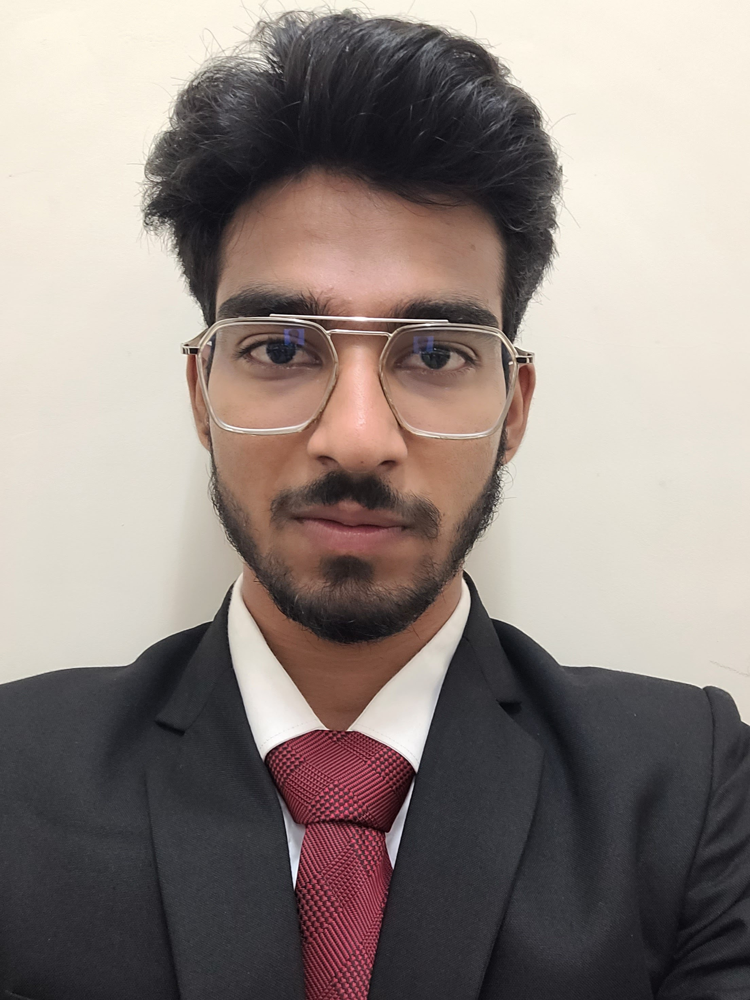

My resume
 Linkedin profile.
Intro
- Hey I am Kabir (20 year old), my known languages are Hindi and English.
I am currently persuing bachlors of business administration
in business analytics domain from Christ deemed to be university.
I want to be a succefull and independent person, My actual
goal is even not kown to me, just husteling and going with the flow.
-
Before COVID I was carrying a different mindset(I was in a football academy). It doesn't implies that I gave up,
after my 12th I tried to approach my previous football acadmey and even I practiced
for athletics(100 m race),but
that also might not written in my destiny as I got injured.
First covid! than injury! this situation was inverse from that fomous dialogue of SRK "jab kisi
cheez ko poori shiddat se paana chaaho to poori kaaynaat tumhe usse milane ki shazish me lag jati hai".
-
I even took one year drop for athletics but in the end it didn't even matter.
Yes, it hurts but it can not resist me to go further. So I chose to be in
management field(I know it was whole different thing from what I did before), because I don't want to stop a point like this.
Education
-
I have done my 10th as well as 12th from CBSE board.
My class 10th result and 12th result
-
During class 10th I was in Kendriya Vidhyalaya Rajgarh M.P.
-
My 11th has been done from MDK Arya school Pathankot, Punjab(as I was in football academy there).
-
My 12th has been done in a different school(R.K. Academy Biaora, M.P.) due to the impact of COVID-19
Why me?
- As I am from footballer , I have a spirit to work as a team.
- In sports, efforts matter more than the result. So if I am ready to give my 100% than no one can stop us to achieve our goal.
- I am capable of adapting changes, So I can easily pick up the pace for the works in which frshers take time.
- I have a good sense of humour and listening habit, through which I can make strong bond among my team mates
Achievments
- Currently I am in second year of my graduation and I have done a
Web developmentpment workshop in the banglore based organisation
Campalin and Here is my LOR.
- I got first possition in ignite 2022(Christ deemed
to be university), Ignite is a business fest in which all participants
participate with the team.
- I have played football at state level, and I was part of United Punjab FC in
the year2018-19.
What can I do?
- Business analysis
- Web development
- Digital marketing
{kind=link}
{kind=link}
{kind=link}